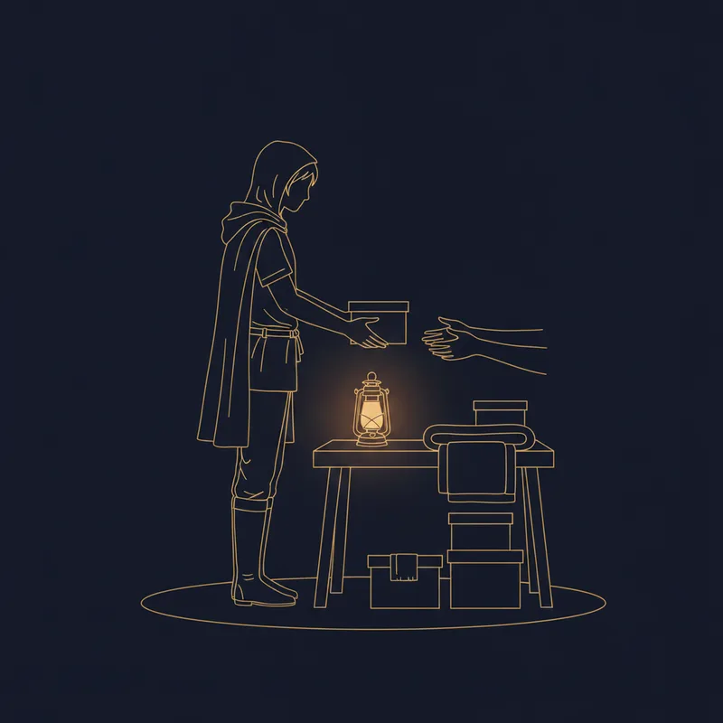
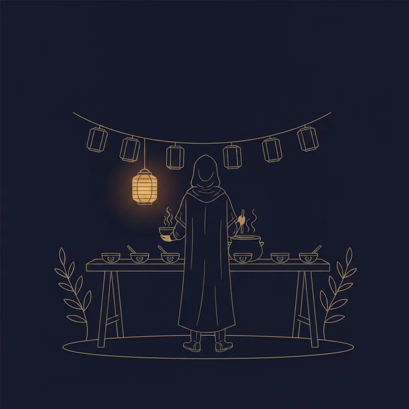
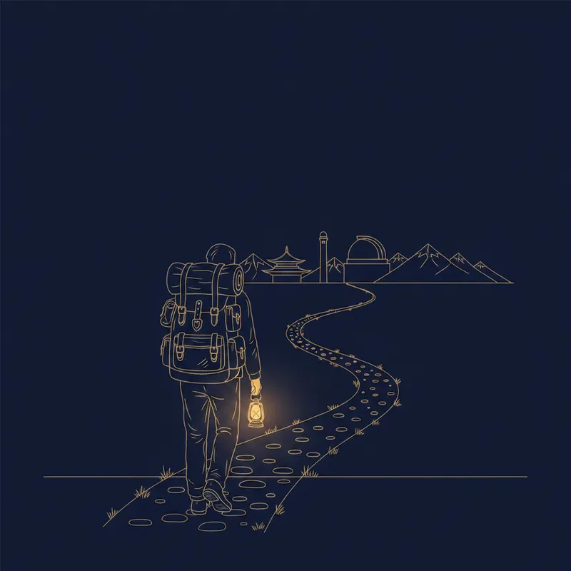
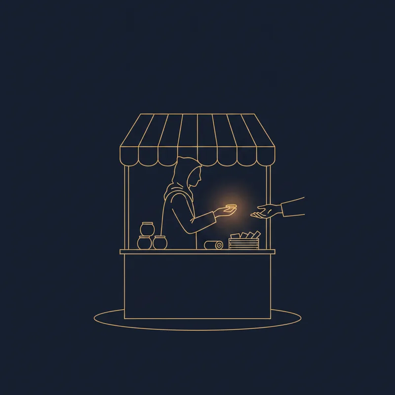
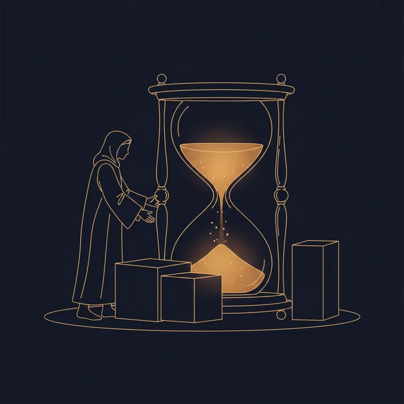
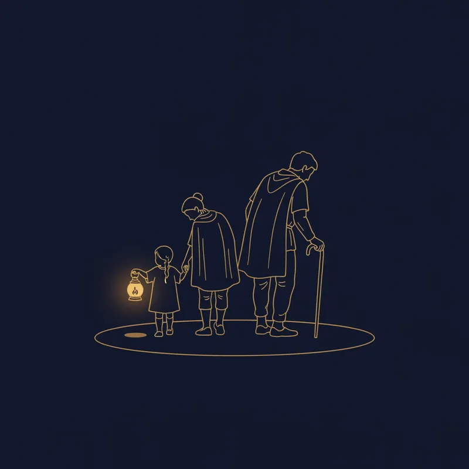
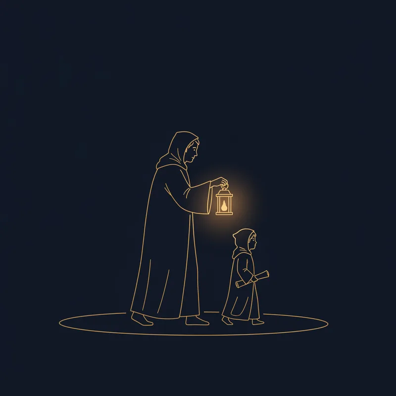
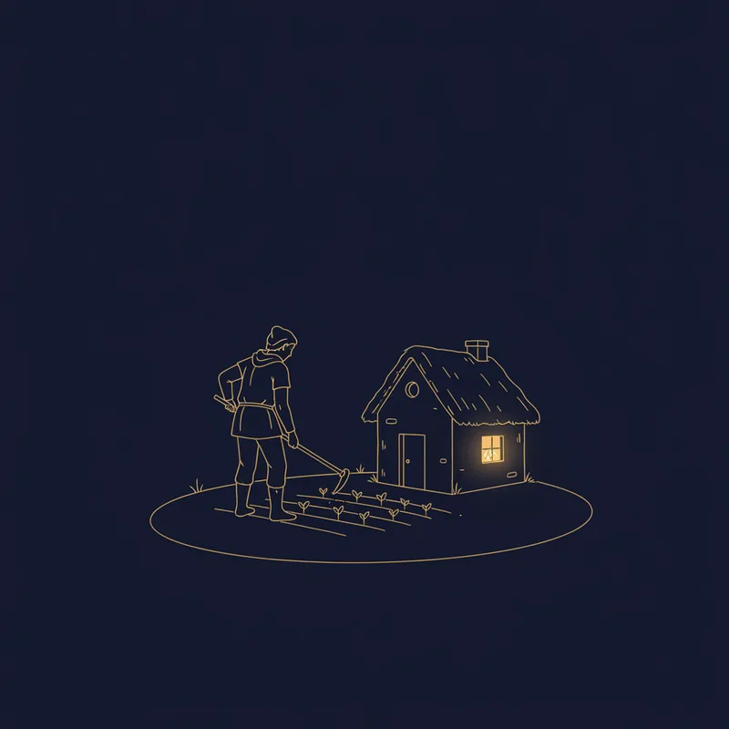
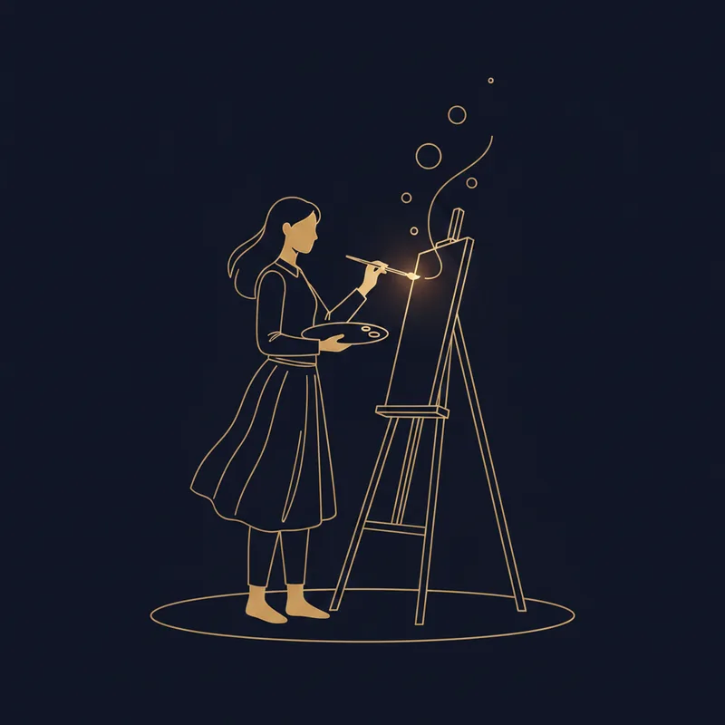

▶ まず「基本職」の列から、自分にいちばん近い職業を1つタップ（学生の人は「なってみたい職業」でOK）——ジョブカードが開きます。スマホでは「ジョブずかん」タブも見やすいです。
▶ 職業をクリックするとジョブカードが開きます / カーソルを合わせると転職ルートが光ります / 🔥=人手不足(求人倍率高)・🔥🔥=深刻な不足・🔥=人手が余り気味(なりたい人が多い狭き門)
▶ 線の太さ=そのルートの通りやすさの目安 王道(条件を満たせば多くが通る) 努力次第 狭き門(実例はあるが少数)。覇者職・伝説職へ入る線はすべて狭き門です
ほうしゅう＝はたらいて得られるもの。この図鑑では 💰収入・❤️やりがい・⏳時間の自由・⭐市場価値 の4つで見比べます。
▶ 列見出し(💰❤️⏳⭐)をクリックすると並べ替えができます。「合計」は4つの報酬の総和です。
※合計が高い職が「良い職」ではありません。あなたがいまほしい報酬の列で並べ替えるのが、本来の使い方です。
💰 収入 — 平均年収の目安から機械的に変換:★1 300万円未満 / ★2 300〜400万 / ★3 400〜550万 / ★4 550〜800万 / ★5 800万円以上。幅のある職は中央値で判定。出典は厚労省「賃金構造基本統計調査」(職業別はjob tag=職業情報提供サイト経由)と民間転職サービスの公開データ。
⏳ 時間の自由 — 年間休日の目安(「就労条件総合調査」。全産業の労働者平均は約117日)に、夜勤・当直・繁忙期の有無と裁量度を加味:★5 125日超えか裁量大 / ★3 110日前後 / ★1 休日が読めない・常時オンコール。
⭐ 市場価値 — 転職市場での求人の多さ(転職求人倍率など)と、スキルが他社・他業界でも通用する汎用性から総合判定。
🔥 人手不足度 — 厚労省「一般職業紹介状況」の職業別有効求人倍率の水準(令和6〜7年度)と各種の将来推計から:★1 倍率1倍未満(なりたい人が多い狭き門) / ★3 1.5〜2.5倍 / ★5 4倍超か深刻な将来不足(例: 建設躯体工事 約9〜10倍、施工管理 約7倍、IT人材は2030年に最大79万人不足の経産省推計)。転職チャート上の🔥(=★4)・🔥🔥(=★5)マークと連動。逆に★1(倍率1倍未満＝なりたい人が多い狭き門)の職業には🔥(青い炎)を付けています。統計のない英雄職以上は「—」。
❤️ やりがい — これだけは統計が存在しない主観指標。裁量の大きさ・成果の見えやすさ・人に感謝される度合いから作成者が仮置きした。この★に異議を唱えることこそ、この教材の正しい使い方。
※統計は調査年次・区分で変わります。授業で使う際は最新の公表値への差し替えを推奨します。
キャリアは多様化し、道草や充電期間（バッファ）があってしかるべき時代になりました。引退後に部分的に働く人も増えています。ここは、フルタイムで上を目指すフェーズにいない人のための広場——セカンドキャリア・パートタイム・充電期間の選択肢を集めました。
よりみちは離脱ではなく、別の種類の経験値がたまる時間です。そして多くのよりみちには「もどり道」があり、転職チャートの職業へつながっています。どの職からでも、いつでも出入り自由——だからチャートには、あえて線を引いていません。ここに載っていないよりみちも、もちろん無数にあります。

「誰かの困りごとに、腕を貸す時間。」
地元のNPOの活動を1日手伝ってみる。仕事のスキルを活かすプロボノ登録も入口。

「ご近所という、いちばん近い社会に関わる。」
自治会・こども食堂・消防団・PTAなど、月1回の役割から。

「地図の外へ。世界がものさしを増やしてくれる。」
期限と予算を決めて1〜3ヶ月から。帰る日を決めると、出発できます。
「肩書を一度置いて、学ぶ人に戻る。」
大学院・職業訓練・リスキリング講座の説明会に1つ申し込む。週5時間の学習枠の確保から。

「小さく商う。値札を自分でつける練習。」
まず1人に、1つ売ってみる。週末の小さな出店やネット販売から。

「働く量を自分で決める。時間がもどってくる。」
週2〜3日・時短から。いまの職場なら、雇用形態の選択肢をまず人事に聞いてみる。

「ケアの時間は、キャリアの空白ではない。」
勤務先の両立支援制度と、地域の支援窓口をまず調べる。ひとりで抱えないことが最初の技術。

「経験を、次の誰かの追い風にする。」
引退後の部分的な働き方の定番。商工会議所や顧問マッチングで「週1日・1社」から。

「土と地域に根を張る、もうひとつの拠点。」
市民農園・お試し移住・ワーケーションから。いきなり移住しないのがコツ。

「つくって、発表する。自分の声を育てる。」
週1本、小さく発表する場所を決める。noteでも朝市でも、公民館の展示でも。
この書に載っていない職業(あなたの職業・身近な職業)を、その場でジョブカードにして追加できます。追加した職業は転職チャート・ジョブずかん・比較表にすぐ反映され、🆕マークが付きます。ワークショップでは「自分の職業がない!」という声こそ最高の教材です。
※追加内容はこの画面を開いている間だけ保持されます。下の「書き出し」でテキスト保存・共有し、次回「読み込み」で復元してください(掲示板やチャットに貼れば"みんなの職業データ"として持ち寄れます)。
職業名と「どんな仕事か」を一言書くだけ。あとはAIが系統・階層・★・とくぎまで下書きします。できた下書きは自分で直してから書に加えられます。
※ AIの下書きはあくまで叩き台です。★（とくに❤️やりがい）はあなたの実感で直してください。ネット接続が必要です。
全項目を自分で入力します。（AIの下書きもここに入るので、確認・修正してから加えてください）